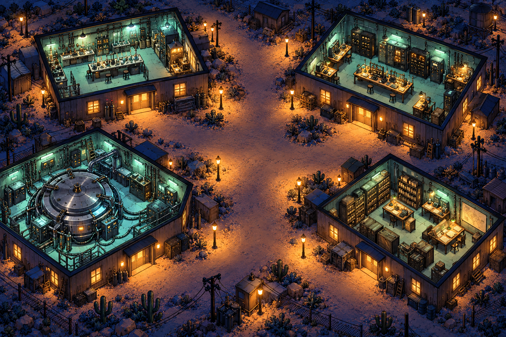

NEW MEXICO · 1943—1945
Grandi scoperte.
Piccole storie.
Lunghe notti.
Una città nascosta sulla mesa. Un gruppo di persone. Entra nei laboratori e scopri il lato quotidiano del Progetto Manhattan.
Ricostruzione artistica · personaggi e dialoghi inventati · fatti e fonti nel diario
IL TURNO DI NOTTE
La storia è fatta anche di chi ripara una calcolatrice.

Benvenuto sulla mesa